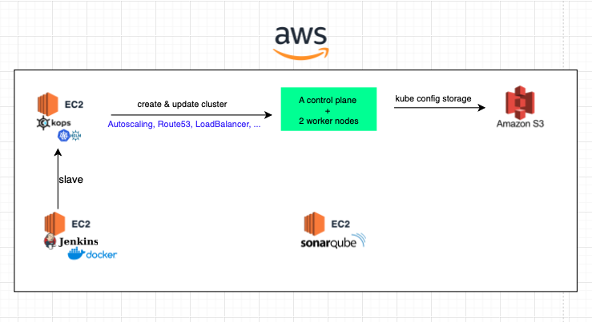
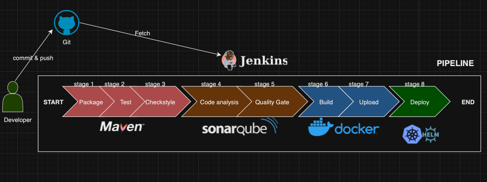

×
"Spring cloud deployment on k8s"
Welcome to this project. I will be deploying spring cloud microservices on Kubernetes. The deployment process will be automated
by a CI/CD pipeline.
Tools :
- Spring boot, Spring & Spring cloud,
- RabbitMQ message queue,
- Zikpin, Brave & Micrometer,
- Elstic Logstash Kibana
- OpenFeign & Resilience4j
- PostgreSQL & PgAdmin
- Github & Maven
- Jenkins
- Sonarqube
- Docker & Docker hub
- Kops, Helm & Kubernetes
- AWS(ELB, Target group, Route53, S3, Autoscaling, VPC)
It a very classic microservice architecture. We can retrieve a service discovery, an API Gateway, a centralized configuration server and database,
RabbitMQ server for asynchronous communicaition between the microservices, Zipkin server for the ditributed tracing, a centralized logback server
with ELK. Note also that we have encrypted all the sensitive informations in the config server with Java Cryptography Encryption. We can complete
this architecture by adding a data processing for our logs.
This fonctionnal aspect of the project is private, it is for internal company use. In order to keep the confidentiality, i will not be talking of
what does the project. I hope you undertand. This architecture is deployed on AWS.
Let see how it is done.

Initally, 3 instances are created. I install on the :
- First one : Kops, Helm, Kubectl, aws cli. Let name this instance "Kops"
- Second one : Jenkins, Docker engine. Let name this instance "Jenkins"
- Third one : Sonarqube. Let name this instance "Sonar"
Note that we set the Kops instance a slave of Jenkins. The reason is that, i did not find a Helm plugin in Jenkins and Jenkins need to trigger a helm command.
In the Kops VM, we created our cluster which will use aws many services like : Autoscaling, Target group for the nodes creation, route 53 for the master node API server,
Loadbalancer for the API server... The kube config file is also store on S3 bucket in order to create the cluster from that file if necessary with kubectl.
Let's continue with the deployment process overview.

Well, this and interesting flow of execution, right ?. Imagine that we are in a IT company or whatever and developers have to maintain the previous project architecture
with more than 10 differents microservices. The automation process is not no more a luxury, it's a necessity. So this is my approach to continously build and deploy
new changes in the project.
A pipeline is created for each service . If a commit is done, a webhook is sent to Jenkins which trigger the pipeline. Maven comes first.
It package the project, test it and to the checkstyle (it's a tool which helps us to define rules to check our code).
Then a code analysis is done by Sonarqube. After that, the code passes through a quality gate (We also define our own rules here to maintain the
quality of our code) which also send a webhook to Jenkins. Then if everything is good, Docker goes into action by building and uploading the image to dockerhub.
Once these step are finished, Helm deploy the container on k8s cluster.
All this is done in a development environment. In production, different changes are applied :
- Config server, Discovery service and API gateway are no more used. ConfigMap and Secret come in action instead of Config server,
LoadBalancer is used instead od Discovery server and Nginx Ingress Controller is used instead of API Gateway. Those tools are kubernetes native services.
They are more convinient in production.
- PgAdmin will be more used. Despite the fact that an server authentication and SSL certificate are set, it is not secure to manage a database on an web interface in production.
- PostgreSQL will be persisted on Elactic Block Store (EBS) and not on the instance. Replication will be also done accross many region.
Thank you for reading it. If you have another or better way to do deploy Spring cloud on k8s, do not hasitate to comment the post or send me a DM on LinkedIn.
Lien github : not available